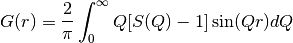
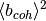

PDConvertRealSpace dialog.
Table of Contents
| Name | Direction | Type | Default | Description |
|---|---|---|---|---|
| InputWorkspace | Input | MatrixWorkspace | Mandatory | Input workspace. The units are assumed to be distance |
| From | Input | string | G(r) | Function type in the input workspace. Allowed values: [‘G(r)’, ‘GK(r)’, ‘g(r)’] |
| To | Input | string | G(r) | Function type in the output workspace. Allowed values: [‘G(r)’, ‘GK(r)’, ‘g(r)’] |
| OutputWorkspace | Output | Workspace | Mandatory | Output workspace |
The neutron diffraction is measuring the differential scattering cross section. This can be
converted to the structure factor  . Using the PDFFourierTransform algorithm, one can obtain the pair distribution function,
. Using the PDFFourierTransform algorithm, one can obtain the pair distribution function,  :
:
(1)
One can transform between this quantity and  or
or  using:
using:
(2)
(3)
where is the sample number density and  is defined in the Materials concept page.
NOTE: This algorithm requires that SetSampleMaterial v1 is called prior in order to determine the and terms.
This algorithm uses the external project PyStoG and specifically uses the pystog.converter.Converter object. To modify the underlying algorithms, the following functions are used for the conversions.
conversions are: see pystog.converter.Converter.G_to_g() conversions are:import wget
import numpy as np
import matplotlib.pyplot as plt
from mantid.simpleapi import CreateWorkspace
# Grab the real data for argon
url = "https://raw.githubusercontent.com/marshallmcdonnell/pystog/master/tests/test_data/argon.real_space.dat"
filename = wget.download(url)
r, gofr, GofR_, GKofR_ = np.loadtxt(filename, skiprows=2, unpack=True)
# Convert gofr to Mantid wksp
g_of_r = CreateWorkspace(DataX=r, DataY=gofr,
UnitX="Angstrom",
Distribution=True)
SetSampleMaterial(InputWorkspace=g_of_r, ChemicalFormula='Ar')
bigG_of_r=PDConvertRealSpace(InputWorkspace=g_of_r, From='g(r)', To='G(r)')
GK_of_r=PDConvertRealSpace(InputWorkspace=g_of_r, From='g(r)', To='GK(r)')
fig, ax = plt.subplots(subplot_kw={'projection':'mantid'})
ax.plot(g_of_r,'k-', label='$g(r)$')
ax.plot(bigG_of_r,'r-', label='$G(r)$')
ax.plot(GK_of_r,'b-', label='$G_K(r)$')
ax.legend() # show the legend
ax.set_xlabel('$r(\AA)$')
fig.show()
The output should look like:

Categories: Algorithm Index | Diffraction\Utility
Python: PDConvertRealSpace.py (last modified: 2019-03-06)